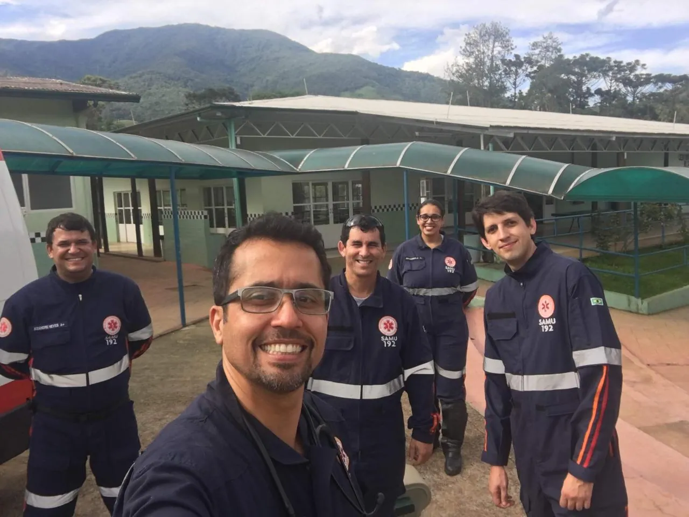
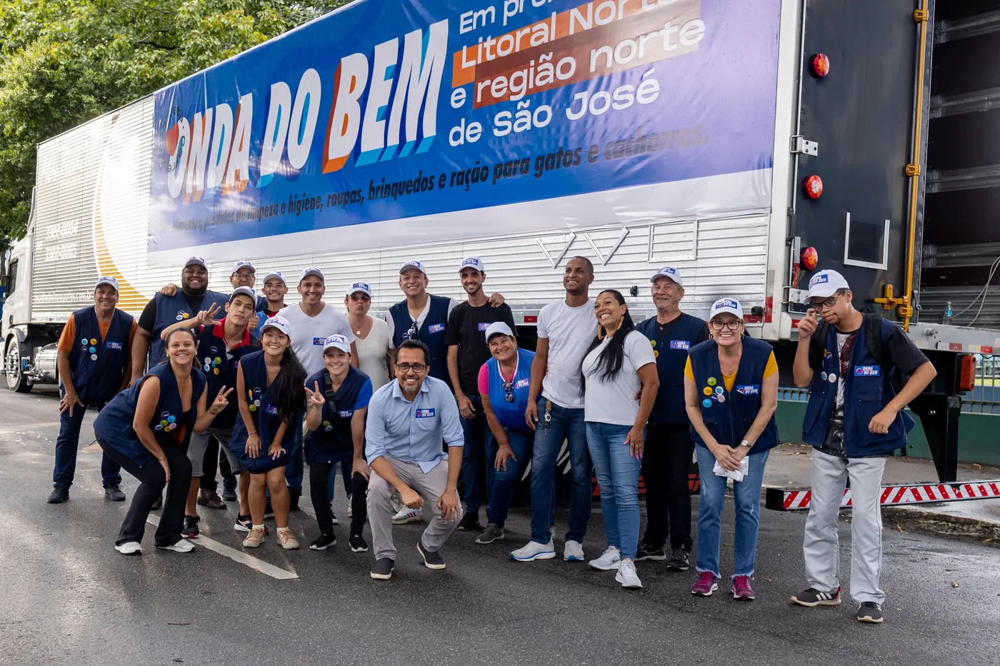
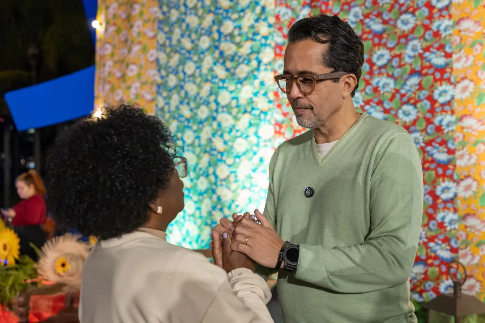

Deputado Federal Candidatura 2026
Dr. Elton Vote número 4412
Pelas pessoas, sempre.
Sou médico, fui vereador por dois mandatos e hoje sou deputado estadual, eleito na primeira disputa com 46 mil votos. Aprendi a ouvir, acolher e buscar soluções — e transformei isso em trabalho, projetos e conquistas para a população. Agora quero dar um novo passo: ser Deputado Federal para levar a voz de São Paulo ao Congresso Nacional.
Uma vida dedicada
a cuidar de pessoas.
Médico há 25 anos, gastroenterologista, cirurgião e intensivista. Atuei na linha de frente da Covid-19, na UTI e no atendimento de emergência. Nasci e moro em São José dos Campos, sou casado com a Dra. Regina, pai de três filhos, cristão e diabético desde a infância. Foi na medicina que encontrei minha missão de vida: cuidar de pessoas.
Fui eleito vereador já na primeira candidatura, em 2016, o quinto mais votado da cidade, com 6.617 votos, e reeleito em 2020 com 7.395 votos, a terceira maior votação da cidade. Depois, eleito deputado estadual também na primeira disputa, com mais de 46 mil votos. Da linha de frente da UTI à vida pública, minha luta é a mesma: proteger vidas e defender direitos.
- 25 anos
- dedicados à medicina e ao cuidado com as pessoas
- 3º
- vereador mais votado de São José dos Campos, na reeleição de 2020
- +46 mil
- votos para deputado estadual na primeira disputa
Do compromisso com a medicina
ao trabalho com a vida pública.
Cada passo foi guiado pela missão de servir às pessoas.
-
Medicina
O início de uma missão
Médico há 25 anos, gastroenterologista, cirurgião e intensivista. Diabético desde a infância, encontrou na medicina sua missão de vida, inclusive em viagens humanitárias pelo Brasil e pelo exterior, levando atendimento a comunidades carentes.
-
2014
Implantação do SAMU
Liderou a implantação do SAMU em São José dos Campos, iniciativa pioneira no Estado de São Paulo, ampliando o acesso ao atendimento de urgência e emergência.
-
2017
Primeiro mandato como vereador
Eleito já na primeira candidatura, o quinto mais votado da cidade. Presidente da Comissão de Saúde duas vezes, defendeu políticas públicas para pessoas com deficiência, diabetes e câncer infantil.
-
2021
Reeleito para o segundo mandato
Reeleito com a terceira maior votação da cidade. Fortaleceu a captação de córneas, intensificou ações de saúde mental e prevenção ao suicídio e esteve na linha de frente durante a pandemia da Covid-19.
-
2022
Eleito deputado estadual
Eleito no primeiro mandato com mais de 46 mil votos. Autor do projeto que garante medidores contínuos de glicemia para o Diabetes Tipo 1 e presidente da Comissão de Gestão de Riscos e Desastres da ALESP.
-
2026
Agora é com você
“Minha missão é cuidar das pessoas, proteger vidas e lutar por um Brasil com direitos e oportunidades para todos.”
Quem conhece a saúde de perto sabe
o que precisa melhorar — e como fazer.
Transformando cuidado em ação: estas são as minhas prioridades como deputado federal.
-
Defesa dos brasileiros nos planos de saúde
“Toda família merece saúde sem medo do próximo boleto.”
Combater reajustes abusivos, ampliar a transparência dos contratos e fortalecer a fiscalização sobre as operadoras.
-
Acesso mais rápido aos medicamentos de alto custo
“Enquanto o paciente junta papel, a doença avança. Vamos acabar com essa burocracia.”
Agilizar o acesso, reduzir a burocracia, fortalecer a fiscalização e garantir mais transparência nos processos.
-
Combater as bets: o câncer financeiro
“Como médico, eu vejo o estrago: o vício em bets está adoecendo a mente do nosso povo.”
Mais fiscalização, limite à publicidade abusiva e apoio a quem já foi vítima do vício. Sua família vale mais que uma aposta.
-
Acesso mais rápido ao tratamento do câncer
“Na luta contra o câncer, cada dia conta.”
Garantir acesso mais rápido ao diagnóstico e ao tratamento, reduzindo a burocracia e fiscalizando o cumprimento dos prazos legais.
-
Barrar a fuga de empresas de São Paulo
“Quando uma empresa vai embora, leva empregos, renda e sonhos.”
Defender políticas que mantenham empresas no Estado, preservando empregos e oportunidades para as famílias.
-
Diabetes: transformar direitos em atendimento de verdade
“O que falta é fazer a lei chegar, de fato, à vida de quem convive com o diabetes.”
Fortalecer a Política Nacional de Prevenção do Diabetes e a educação em diabetes para pacientes, familiares e profissionais.
-
Mais prevenção, menos tragédias
“O clima mudou. O Brasil precisa estar preparado para enchentes, deslizamentos e outros desastres.”
Fortalecer a Defesa Civil, os sistemas de monitoramento e as obras de infraestrutura que protegem vidas.
Quem já foi atendido,
conta como foi.
Resolveu um problema que a gente batalhava havia anos. Trabalho sério, de portas abertas e sem enrolação. É diferente.
Sempre ouve de verdade e dá retorno. A gente sente que tem alguém do nosso lado.
Vi de perto o compromisso com a saúde da nossa comunidade. Tem meu voto.



Veja em vídeo
Em breve.
Em breve.
Some sua voz
a essa campanha.
Deixe seu nome e telefone. A equipe entra em contato para você participar e acompanhar a campanha de perto.
Vote número 4412